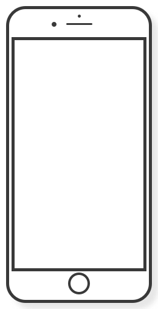

가장 쉬운 챗봇 제작 서비스
이제 비개발자도 챗봇을 손쉽게 만들 수 있어요. 더이상 챗봇을 만들기 위해 챗봇빌더를 학습하거나 챗봇을 어떻게 설계할까 고민하지마세요. 당신이 원하는 챗봇세트를 선택하고 세트에서 필요로 하는
항목만 입력하면 챗봇이 완성됩니다. 지금 무료로 시도해보세요.
GET STARTED FOR FREE
* CHATBRICK을 사용하기위해서는 페이스북 로그인이 필요합니다.
FEATURE
코딩없이
챗봇제작
챗봇제작
챗봇을 제작하는 과정에서 코딩은
필요하지 않아요.
필요하지 않아요.
비개발자도 가능한
쉬운 챗봇제작
쉬운 챗봇제작
타 챗봇빌더와 다르게 정보설계 없이
데이터만 입력하면 챗봇을
제작할 수 있어요.
데이터만 입력하면 챗봇을
제작할 수 있어요.
간단한 멀티플랫폼
지원
지원
하나의 챗봇을 제작하여
페이스북 메신저와 텔레그램에 챗봇을
적용할 수 있어요.
페이스북 메신저와 텔레그램에 챗봇을
적용할 수 있어요.
무료로
챗봇제작
챗봇제작
“CHATBRICK”에서 챗봇을 제작하려면
0원이 필요해요.
0원이 필요해요.
HOW TO USE
기본정보 입력 및
SET 선택하기
SET 선택하기
챗봇의 이름/설명을 입력하고 제작하고
싶은 챗봇의 종류에 맞는
세트를 선택합니다.
싶은 챗봇의 종류에 맞는
세트를 선택합니다.
데이터정보
입력하기
입력하기
각 세트에서 요청하는 항목에
데이터를 입력합니다.
데이터를 입력합니다.
플랫폼
연결하기
연결하기
챗봇을 적용하고 싶은 페이스북의 페이지 및
텔레그램의 봇을 선택하면
챗봇 제작이 끝납니다.
텔레그램의 봇을 선택하면
챗봇 제작이 끝납니다.
SET LIST

DESIGNER
PORTFOLIO
PORTFOLIO
디자이너로서 자신의 포트폴리오를
효과적으로 홍보할 수
있는 세트에요.
효과적으로 홍보할 수
있는 세트에요.

HACKATHON
해커톤을 효과적으로 운영하기
위한 세트에요.
위한 세트에요.

BRICKS
내가 사용하고 싶은 요소들을 조합하여
나만을 위한 챗봇을 만들 수
있는 세트에요..
나만을 위한 챗봇을 만들 수
있는 세트에요..
COMMING
SOON
SOON
더 다양한 세트가 제공될
예정입니다.
예정입니다.